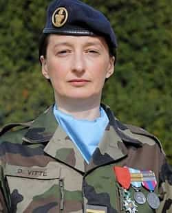
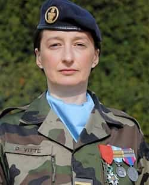

< < < Back
4 Reasons Why Women Cannot And Should Not Lead – Return Of Kings
We here at Return Of Kings pretty much agree on what makes a woman attractive. I will spare you a list, as enough material is already available on the website if you do not know the feminine attributes that makes a woman desirable.
Though we also generally agree on what makes a woman unattractive, specific traits seems to disgust men more than others. But one psychological attribute stands out as one of the most hated: power. Especially the abuse of this power.
Men have a deeply rooted aversion to powerful women, and rightly so. In addition to being repulsive, it involves huge risks. Giving power to woman is not a smart decision and here is why.
1. It is unnatural

Photoshop montage of a female leader with long hair
The law of the leader is eternal. He is the most charismatic, the wisest or the strongest of a group, not the one that feels the most or wants to live in a carefree bubble. The law of the jungle, applied in its rawest form, chews a lone woman and spits her out.
The handful of women that led successfully in the past, such as Queen Victoria, Joan of Arc or Boudicca for the most famous, always had an army of men and a government of men to reach their goals. It was composed of male ministers, male officers, and male soldiers only. Imagine what would have been the outcome if leading an army of women.
Women do not want to lead! This is not in their nature. They want to be led. It is what defines their attraction to men. It is more out of spite and in a thirst for revenge that they seek power. Revenge on failed relationship, professional failure, personal issues… the whole world governed by men is their nemesis and must be shown that she can do it just as good as any man.
2. It is unattractive

Dilma Rousseff, the shame of her Bulgarian ancestors and butch president of Brazil

Dalia Grybauskaité, (classic rabid anti-Russian, pro-homosexual, pro-male-only conscription agenda) incompetent president of Lithuania. This is not what Lithuanian women look like

Angela Merkel, female (yet to be determined) president of Germanistan
The c***. Start to see a pattern there?
A feminine and fragile, and therefore attractive, woman seeking power cannot be taken seriously as a leader. A leader is someone that shows more than the others. More mettle, more courage, more intelligence or more grit. Women that desire to inspire trust from weaker men (voters, subordinates, white knights, etc) have to consciously become more masculine (short hair, male clothing and masculine behaviour), in order to mimic the masculine attributes that compose the archetype of the leader.
In essence, whereas power held by men is an aphrodisiac for women, it as the opposite effect on attractiveness when women hold power. Feminine attractiveness to men on the psychological level can be narrowed down to: femininity, obedience, loyalty and submission.

Women in positions of power rarely look like this
Let’s say that your boss is attractive. You want to fuck your boss because she is a physically attractive woman. She could be flipping burgers for all you care. The position occupied is irrelevant on the pure physical aspect. But you also want to fuck her for the pleasure of having submitted her abstract position of authority to your own, physical authority and the strength of your magnificent meat.
Just like the warrior of the tribe challenges the chief and prevails, having triumphed using the universal expression of power, dominance through physical strength, makes one the new guy in charge. Women fuck men of power in the hope of gaining access to their resources, protection, or secured environment. Men fuck women of power to prove a point and assert their authority over them.
3. It is dangerous
Women are governed by their emotions. People that need safe spaces are not able to be leaders. Feminists that demand power or claim that they have it are delusional. They are empowered if they are in a secluded room, where the exterior world and its dangers cannot reach them and confront them.
 

Female soldiers in elite corps (or willing to be) crack under pressure, being mentally and physically weaker than men. Even if they are given a favourable treatment, they cannot cope. When they access power, it is through bureaucracy and the enforcement of a political agenda, not through excellence. They also cannot be put on the battlefield as they are a liability for their colleagues and a prize if the enemy captures them.
Physical and mental tests of resistance are the absolute base on selecting future leaders. Not picking the best of the best is illogical and puts lives in danger. In professions that require calm under extreme pressure and peak physical capability, such as firefighter, their level is cruelly insufficient.

Women’s standard response when caught in the act, be it cheating, lying or having a man’s blood on their hands
Female leaders listen to their emotions and their feelings. Thinking rationally about the consequences of their decisions is second. “It was the heat of the moment!” she said. Feminist leaders, such as the Lithuanian female president, are fundamentally guided by their feelings and misconceptions, applying the highest levels of double standards.
A true chief leads by example. Women, by nature, want to have their cake and eat it too, sacrificing others for their own personal benefit.
4. It is counterproductive
Focused on leading or exercising a position a power, women sacrifice their own happiness and their loved ones’, which can be achieved through a stable relationship focusing on nurturing and raising children. Women possessing any level of power are seldom happy. The distrust they inspire among men creates a void around them which turns into a vicious circle of anger and bitterness, hindering their capacity to think rationally and to reach goals
It is not easy to lead. That is part of the gig. Trials and failure are constant and keeping calm when facing adversity is what makes a chief. Women simply do not have what it takes and it is normal. What is not is that what visibly does not work is enforced to satisfy a small number of mad individuals.
Women are proven to be less effective leaders than men. They create resentment among their (mentally stable) male subordinates as they are being dominated by an individual that is physically far weaker than them. It is a deep, visceral feeling that cannot be repressed. The results are less motivation to reach higher results for this individual and distrust.
Le mot de la fin
Women, for their own good and that of the world surrounding them, must renounce seeking power. A happier, more balanced, and successful society can be the result of this decision, as it has been endlessly proven in the past.
But we all know that with the help of the elites of today and their plans, they will not do it willingly.
Read More: Bad Things Happen When Women Lead And Men Follow